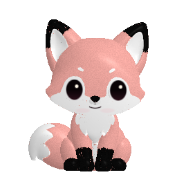
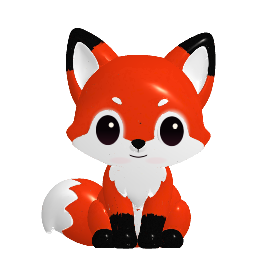

Before

256 × 256, anti-aliasing disabled.
Same real 3D model and material; a one-time cached portrait, with no idle camera. Both images are displayed at the same size. This capture uses the neutral preview face; phone reveal expressions can differ.

256 × 256, anti-aliasing disabled.
512 × 512, 4× multisample anti-aliasing. Fine grain belongs to the finish.
